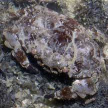
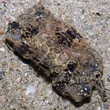
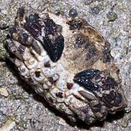
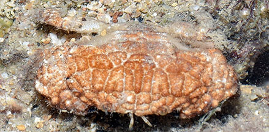
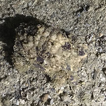
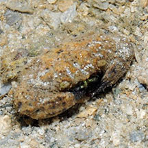
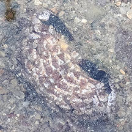

|
|
| crabs text index | photo index |
| Phylum Arthropoda > Subphylum Crustacea > Class Malacostraca > Order Decapoda > Brachyurans > Family Xanthidae |
| Lumpy
rock crab Euxanthus exsculptus Family Xanthidae updated Sep 2019 Where seen? Resembling a small lumpy rock, this slow moving crab is sometimes seen among coral rubble and near living reefs. 'Exsculptus' means 'carved' in Latin. Features: Body width 3-5cm. Body somewhat rectangular, with short pincers. Body and pincers are densely covered with smooth lumps and bumps. Pincers very short with dark tips, and folds under the body. Walking legs not hairy, with pointy tips. In various colours often mottled shades of brown, beige, grey. |
 St. John's Island, May 06 |
 Terumbu Pempang Tengah, May 11 |
 Underside. |
| Lumpy rock crabs on Singapore shores |
On wildsingapore
flickr
|
| Other sightings on Singapore shores |
 Big Sisters Island, Sep 20 Photo shared by Loh Kok Sheng on facebook. |
 Pulau Hantu, May 19 Photo shared by Joleen Chan on facebook. |
 Pulau Semakau, Jun 11 Photo shared by Loh Kok Sheng on flickr. |
 Cyrene, Sep 22 Photo shared by Che Cheng Neo on facebook.. |
Links
|